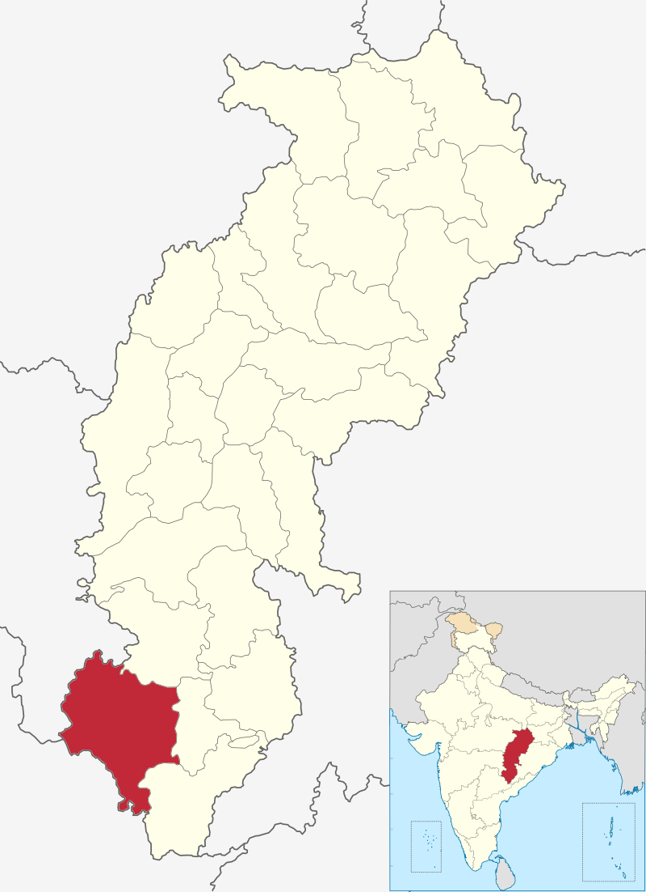

|
Chhattisgarh Tourism |
| Bijapur District, formerly known as Birjapur, is one of the 27[1] districts of the state of Chhattisgarh in central India. It is one of the two new districts created on May 11, 2007. As of 2011 it is the second least populous district of Chhattisgarh (out of 18), after Narayanpur. I | Country India |
|---|---|
| State Chhattisgarh | |
|  | |